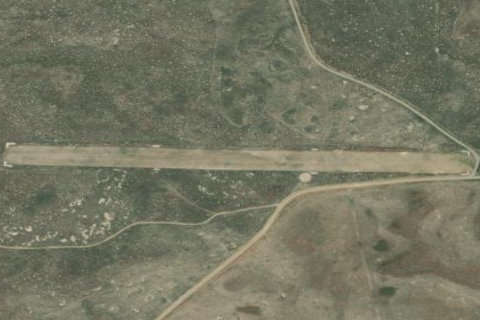

LAIDLAW CORRALS
U99 · ID

Aerial imagery source: Esri, Vantor, Earthstar Geographics, and the GIS User Community
| Identifier | U99 |
|---|---|
| State | ID |
| Runway length | 2,250 ft |
| Runway width | 130 ft |
| Surface | TURF |
| Runway | 07/25 |
| Elevation | 4,448 ft |
| Ownership | public |
| CTAF | 122.9 |
| Coordinates | 43.03702777, -113.73361111 |
Notes
[idaho_itd] State Airfield [shortfield] Location Overview Laidlaw Corrals (U99) sits on Idaho's sparse desert plateau about 12 miles north of the tiny community of Kimama, in the lava-rock country south of Craters of the Moon and north of the Snake River Plain. It's reached primarily by the rough, often poorly maintained Carey-Kimama backcountry road, and the surrounding landscape is classic high desert: sagebrush flats, volcanic rock, and the prominent 800-foot Laidlaw Butte visible nearby. There's no nearby town or services of note — this is genuinely isolated rangeland, historically used for sheep and cattle grazing. Camping & Recreation The strip itself has no developed camping facilities, restrooms, or services — it's classified as a primitive airstrip within Idaho's backcountry airstrip network, with only basic aids like a windsock and segmented circle. That said, the area draws desert backcountry enthusiasts: it's a jumping-off point for exploring lava features like the nearby "Blow Out" volcanic vent, Laidlaw Butte, and other remote geologic sites, as well as hunting (upland birds and big game) and general desert backcountry travel. Anyone camping here should be self-sufficient, as there's no water, shade structures, or amenities. Notes & Warnings The runway (7/25) is a 2,250 x 130-foot turf strip in poor condition, with FAA remarks noting ongoing rodent damage plus wear from ground vehicles and livestock crossing the field — burrows and uneven turf should be expected. There's rising terrain to the west of the field along Runway 25, a road obstruction near the runway, and no winter maintenance, so the strip is best avoided during snow season. It's unattended, has no fuel or services, and the high elevation (around 4,448 feet) combined with a rough surface calls for conservative density-altitude planning, especially in warmer months. Runway edges are marked only with white rock boundary markers, so a good look before landing is wise. History The airstrip takes its name from the Laidlaw family, Scottish immigrants who established one of the largest sheep operations in south-central Idaho — reportedly around 6,000 acres — with patriarch James Laidlaw building the ranch before it was later affected by federal land policy changes under the BLM. The nearby Laidlaw Butte is likewise named for him, and family lore places his burial site in the area. The corrals that gave the airstrip its name were used for handling livestock on the surrounding desert range, and the state-owned strip, activated in 1951, has since served as a small backcountry gateway into this stretch of lava desert for pilots, ranchers, and outdoor recreationists — including, notably, being the last confirmed area associated with the unsolved 1996 disappearance of a Burley hunter.